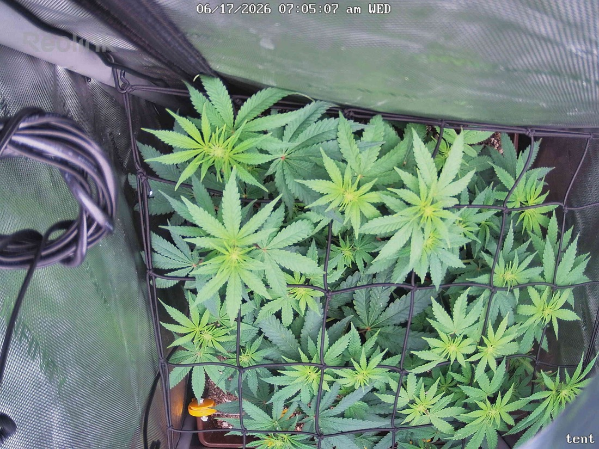

← All reports
Jun 17, 2026
Wed Jun 17, 2026 — 7:05 AM

Prognosis
Daily check — 2026-06-17 (Day 14 of 12/12)
- Camera shifted, not the plant: Today's frame is panned left/down vs yesterday, so direct overlay is rough — the canopy itself looks the same size and density. No dramatic overnight growth expected day-to-day; this is normal early-flower fill, not a stall.
- Color: Healthy medium-to-deep green across the canopy. Newer top growth is a slightly lighter lime green (normal active flowering growth), older fan leaves darker. No yellowing, interveinal chlorosis, or edge/tip burn visible.
- Posture/structure: Leaves are flat and turgid — no tacoing, no clawing, no drooping. Canopy is sitting nicely flat in the scrog net you added 6/13. Colas are well-distributed across the screen.
- Pests: No webbing, no visible mites, no fresh stippling I can pick out at this resolution. Consistent with your 6/16 close inspection (no mites, 3rd Green Cleaner done). Looking like the treatment cycle is working.
- Mold/disease: None — no powdery mildew, no gray fluff, no lesions.
- Soil/water: Last fed 1.5gal vermicompost tea 6/15; surface not visible enough to judge moisture, but no wilt or overwater droop showing. You're ~2 days into the ~4-day cycle, so timing's fine.
- Phase check: Flipped 6/3, so this is ~Day 14 of flower — right in the stretch/transition window. Canopy fill and the lighter top growth are exactly what you'd expect; pistil/pre-flower formation should be getting visible at nodes soon if not already. On track.
- Light: Running 700 PPFD at center since 6/14 with no bleaching or tacoing on the top colas — plant is tolerating it well. Hold here through stretch; you can consider creeping toward 750–800 once you see solid pistil development and no light stress, but no need to rush.
Suggested next action: No action needed — stay the course. One optional flag: keep doing under-leaf checks through your remaining Green Cleaner round (4th treatment) to fully close out the mite egg-hatch cycle before you stop spraying.
Overall: Healthy, stress-free plant tracking right on schedule for early flower — mite situation appears under control and the scrog/light setup is dialed in.